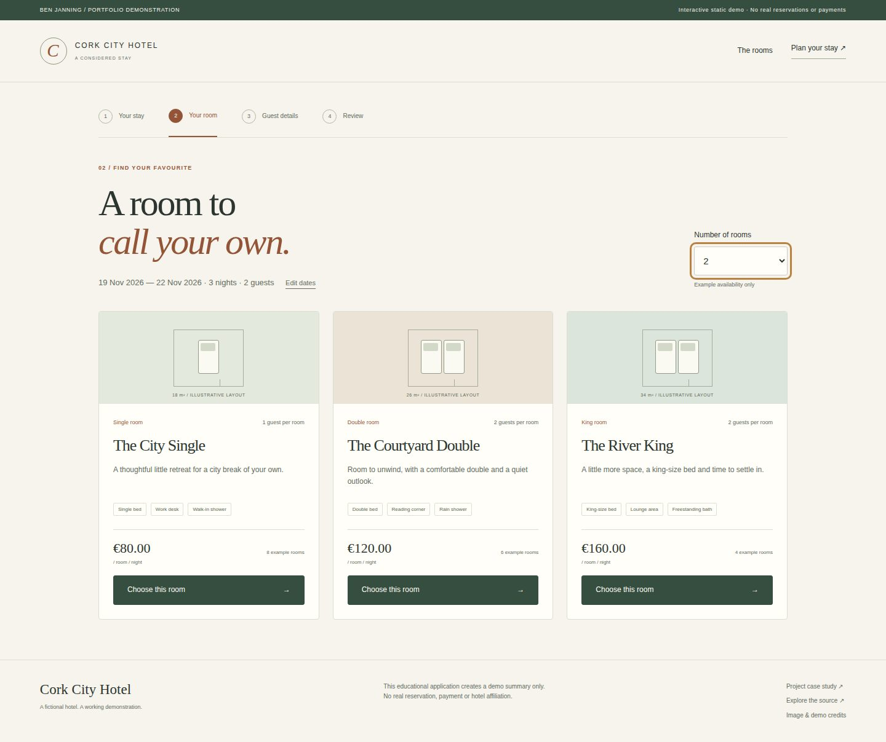
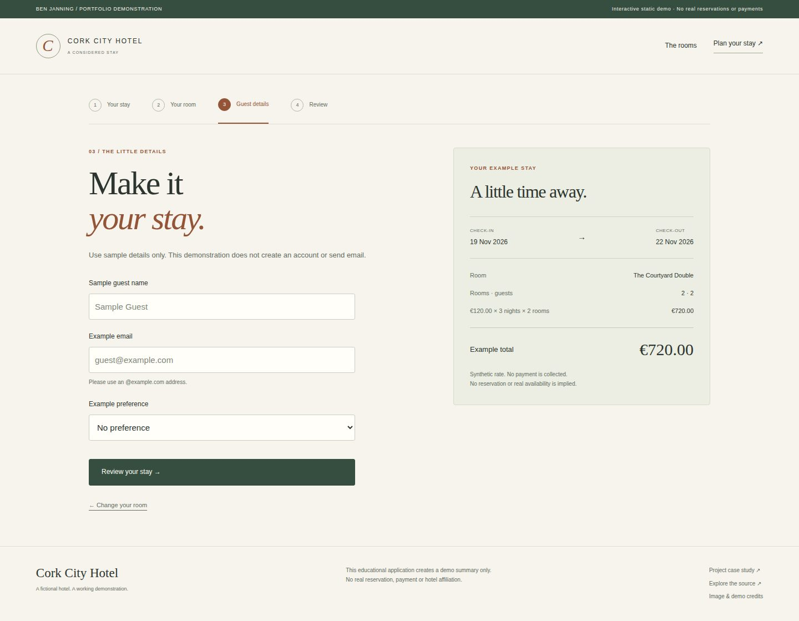
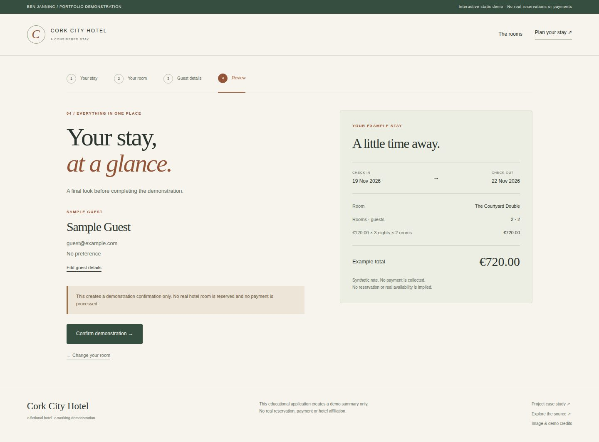
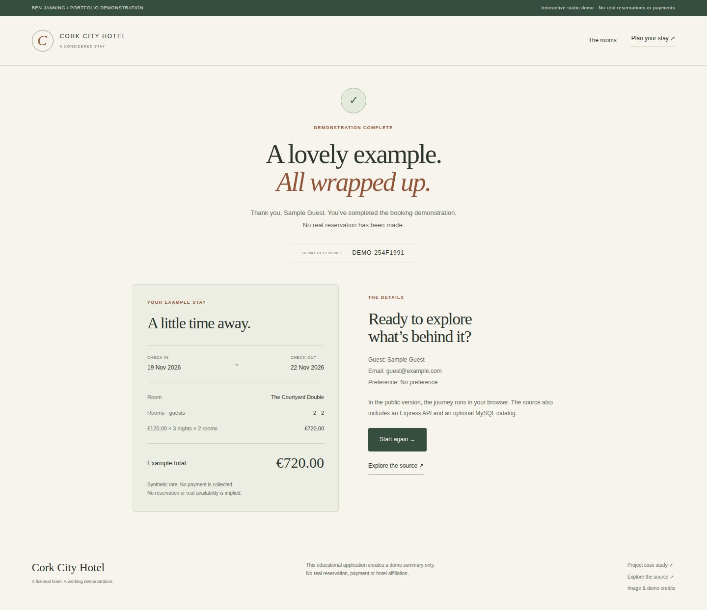

Hotel booking prototype.
A complete demonstration booking journey, from dates and room cards to guest details and confirmation.
Public demo: browser-based static version. See source for architecture and limitations.

What I built
Evolved my original Express/EJS hotel coursework into a polished application with a complete booking journey and a matching browser-based public demo.
Why it matters
A multi-step transaction should carry information reliably from one screen to the next. The project explores session state, validation and pricing across a booking journey.
How it works
- 01
Choose dates and a guest count, then compare three example room types.
- 02
Select room quantity and enter synthetic guest details; review the itemised total.
- 03
Confirm the demonstration and receive a clearly labelled demo reference. No real reservation or payment is made.
What it demonstrates
Server-rendered web development, session handling, input validation and turning a multi-step process into a working application.
Evidence, with context.
15 backend/rule regression checks, one isolated MySQL 8.4 catalog integration check and two full browser workflows passed before publication. Both Express and static journeys validate dates and sample emails, calculate two €120 rooms over three nights as €720, preserve confirmation on reload, reset and fit a 390px screen. Exact-revision evidence is linked below.
Verified source: 4214b29b3e70 · Tests and visual capture ↗








Scope and limitations
The public GitHub Pages demo runs in the browser, sharing the interface and rules with the server source. It does not run Express/MySQL. Neither mode creates real inventory, reservations, accounts or payments. MySQL integration verifies the synthetic catalog in a disposable CI database; production operations, persistence of real bookings and concurrent stock allocation are outside this prototype.
Visual provenance and source attribution are recorded in the evidence register ↗.
Under the surface.
Architecture, methods and improvements
Shared EJS, JavaScript and pure booking rules power both modes. Express independently validates selections and guest details, recalculates prices, protects session writes with CSRF and handles duplicate confirmations. MySQL2 uses bounded pooled connections and supports the tested MySQL 8.4 authentication. CI starts isolated synthetic database and application servers, verifies backend and browser journeys, then exports commit-identified screenshots. Original templates remain in views/legacy and Git history.
Try it locally
Run npm ci, npm test and npm start for Express at http://127.0.0.1:3000. No database is needed by default. npm run build:demo generates the public static version. An optional isolated MySQL Docker setup and opt-in integration test are documented separately.
The portfolio is a static GitHub Pages site. Server applications run locally; the portfolio does not collect bookings, credentials or payments.